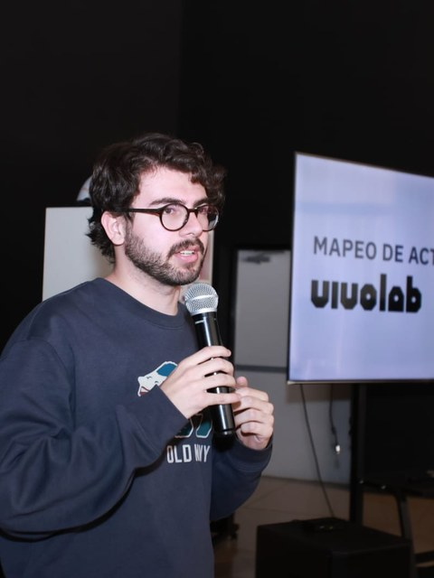

Instituto Kune A.C.
SOMOS
KUNE
A.C.
Antes de aprender cómo funciona el mundo, ya intentábamos rediseñarlo. Garabateábamos mapas, parques y planes sin pedir permiso. Lo hacíamos porque imaginar soluciones era algo natural.
Pero al crecer, convertimos muchas ideas públicas en documentos imposibles de leer, procesos lentos y diagnósticos que rara vez llegan a convertirse en acción.
Kune existe porque creemos que la política pública merece algo mejor. Las personas que planean, coordinan y evalúan proyectos públicos necesitan herramientas claras, colaborativas y auditables. Herramientas que ayuden a pensar, no solo a presentar.
Por eso nos llamamos Kune, "juntos" en esperanto, y por eso Garabato tiene la estructura de un expediente institucional y los trazos de un crayón. Porque incluso dentro de las instituciones debe existir espacio para imaginar nuevas formas de hacer las cosas.
Dibujando juntos lo público.